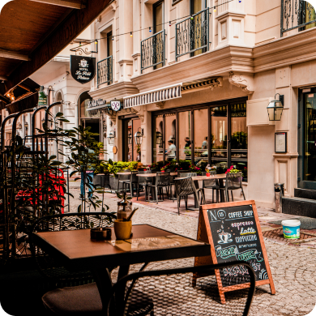
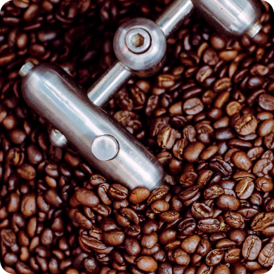

Comfortable, laid-back atmosphere
Whether you have a favorite drink you want prepared a specific way, or you’re new to coffee and would like recommendations... our baristas are here to help. Feel free to ask questions, or tell them exactly what you want so they can prepare the perfect drink for you.

Freshly roasted coffee beans
We get fresh coffee bean shipments directly from sustainable growers. Then we roast them in-house for optimum freshness. Don’t settle for stale old coffee.
 Drink Menu
Drink Menu
Food menu